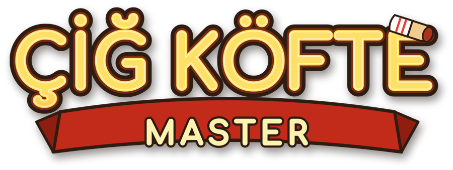
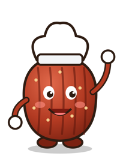

Yükleniyor… / Loading…
Oyun yüklenemedi. Sayfayı yenileyin. / The game could not load. Please refresh the page.

Telefonu yan çevirin
Please rotate your device
Tam ekran için: Safari'de
Paylaş ⬆
→
Ana Ekrana Ekle
, sonra oyunu ana ekrandaki simgeden açın.
Tamam
← tugrion.com